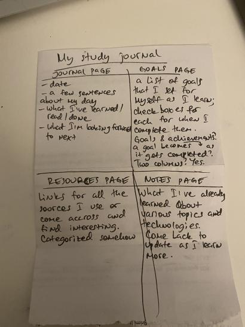
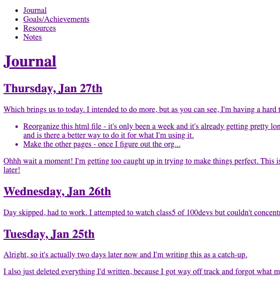
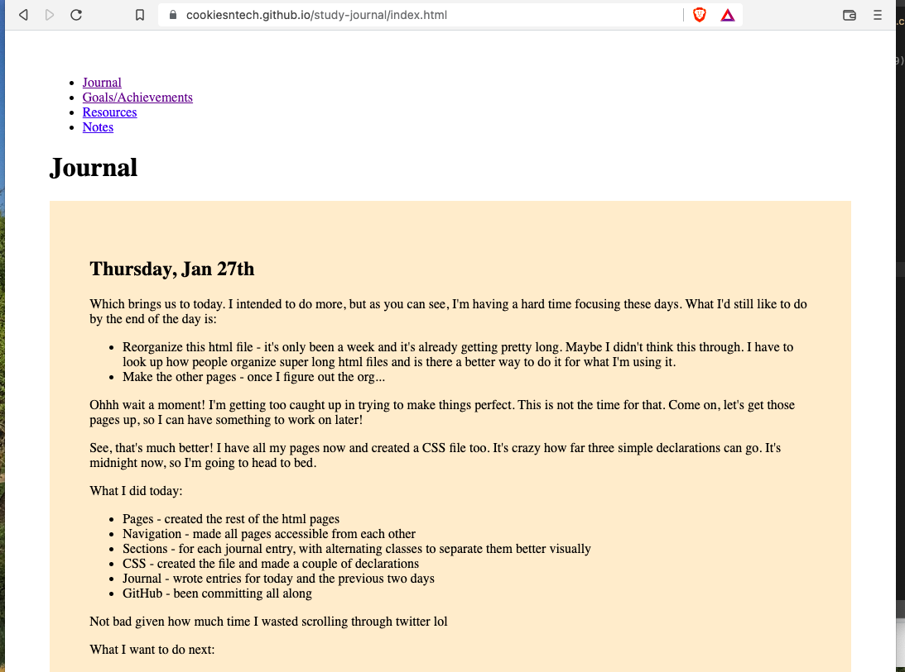
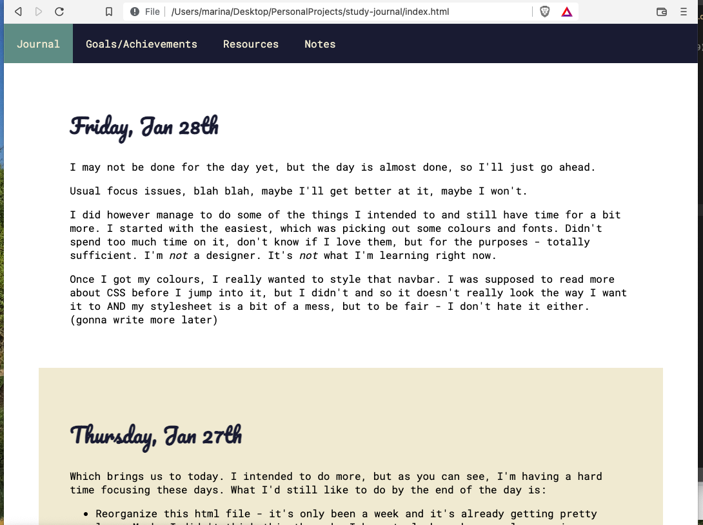
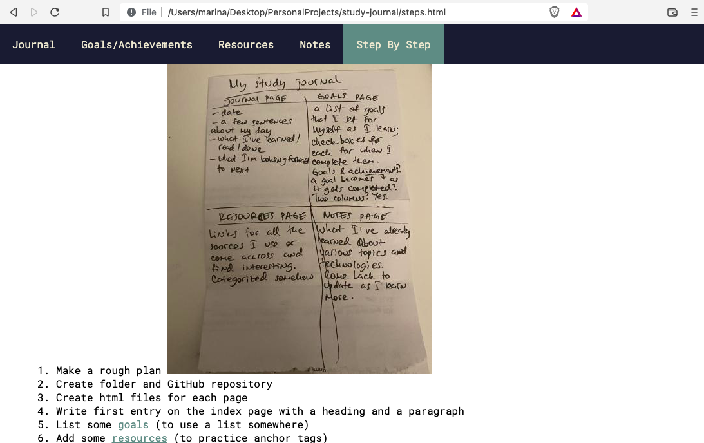

Sorry about the unformatted images, will fix eventually.
This project, step by step
I go around recommending people to do it too, but I know how hard it can be to get started.
That's why I'm making this page, documenting all the small steps I take to put it together (because who wants to read them as git commits...).
Plus, I would love to see how many I end up with by the time I start feeling like there's not much else I can do.
- Make a rough plan (no need to overthink):

- Create folder and GitHub repository;
- Create html files for each page;
- Write first entry on the index page with a heading and a paragraph;
- List some goals (to use a list somewhere);
- Add some resources (to practice anchor tags);
- Add headings for each category of things I've learned on the notes page;
- Add links to each page to access the others:

- Close all anchor tags;
- Create css file;
- Get the text away from the edges of the page;
- Create sections for each day's entry;
- Use alternating background to separate them visually:

- Choose a color palette and comment it on top of the css file;
- Choose fonts and link them in the heads of all html files (yep, I did think it would work if I only put it in index.html);
- Apply fonts and colors to the relevant elements;
- Style the navigation bar:

- Check all files for errors on W3C;
- Fix errors;
- Add target="_blank" to every single link. YESSSS!
- Make step-by-step page;
- List all the steps I've taken so far;
- Add some images to illustrate those steps (and to practice adding images);
- Figure out how to make them expandable/drop down/anything that's better than their current state (this is where I'm at at the time of writing this list, will add next steps as they come):
